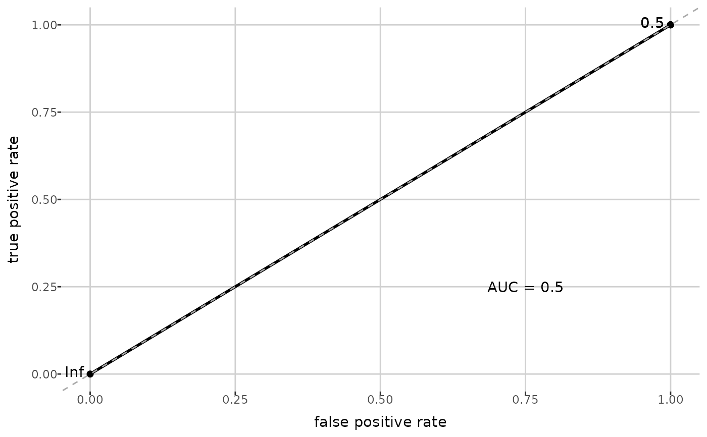

Get model summary
get_model_summary.Rdget_model_summary() returns a list containing: train dataset, test dataset
with predicted values, model coefficients, AUC value and ROC plot, for
a model.
Arguments
- model
a model object, the output of
build_model().
Examples
path <- get_example_data("small_biocrates_example.xls")
dat <- read_data(path)
dat <- add_group(dat, "group")
dat <- complete_data(dat, "limit", "limit", "limit")
#> Completing 109 < LOD values...
#> Completing 6 < LLOQ values...
#> Completing 9 < ULOQ values...
model <- build_model(dat, "group", "2", "Lasso")
#> Warning: one multinomial or binomial class has fewer than 8 observations; dangerous ground
get_model_summary(model)
#> $train
#> sample identification 2 C0 C2 C3 C3-DC (C4-OH) C3-OH C3:1 C4
#> 1 K_Biocrates_4_1 1 45.1 5.28 0.352 0.17 0.019 0.019 0.217
#> 2 K_Biocrates_4_2 1 46.2 7.88 0.495 0.17 0.019 0.015 0.248
#> 4 K_Biocrates_4_18 1 30.1 10.50 0.191 0.17 0.019 10.000 0.107
#> 5 K_Biocrates_4_19 1 31.5 11.30 0.243 0.17 0.019 10.000 0.161
#> 7 K_Biocrates_4_21 1 46.3 14.00 0.491 0.17 0.019 10.000 0.283
#> 9 K_Biocrates_4_24 1 52.0 9.55 0.544 0.17 0.019 0.019 0.322
#> 10 K_Biocrates_4_25 1 23.4 5.31 0.181 0.17 0.019 0.019 0.246
#> 12 K_Biocrates_4_50 0 40.8 6.41 0.473 0.17 0.400 0.019 0.100
#> 13 K_Biocrates_4_51 0 44.6 10.30 0.200 0.17 0.019 0.019 0.200
#> 17 K_Biocrates_4_55 0 42.8 4.04 0.378 0.17 0.019 0.019 0.215
#> 18 K_Biocrates_4_56 0 42.2 8.69 0.558 0.17 0.019 0.017 0.287
#> 19 K_Biocrates_4_65 0 44.2 7.69 0.606 80.00 0.019 0.019 0.311
#> 20 K_Biocrates_4_66 0 42.8 8.86 0.386 0.17 0.019 0.019 0.273
#> 21 K_Biocrates_4_69 0 34.4 5.30 0.328 0.17 0.019 0.019 0.189
#> 25 K_Biocrates_4_76 0 36.3 7.21 0.236 0.17 0.019 0.019 0.153
#> C5
#> 1 0.157
#> 2 0.231
#> 4 0.087
#> 5 0.087
#> 7 0.191
#> 9 0.182
#> 10 0.109
#> 12 0.179
#> 13 0.245
#> 17 0.184
#> 18 0.238
#> 19 0.278
#> 20 0.155
#> 21 0.222
#> 25 0.135
#>
#> $test
#> probability_2 sample identification 2 C0 C2 C3 C3-DC (C4-OH) C3-OH
#> 1 0.4666667 K_Biocrates_4_17 1 43.3 13.00 0.457 0.17 0.019
#> 2 0.4666667 K_Biocrates_4_20 1 38.6 6.87 0.285 0.17 0.019
#> 3 0.4666667 K_Biocrates_4_23 1 41.8 9.30 0.289 0.17 0.019
#> 4 0.4666667 K_Biocrates_4_38 0 36.4 8.87 0.425 0.17 0.019
#> 5 0.4666667 K_Biocrates_4_52 0 40.4 7.53 0.200 0.17 0.019
#> 6 0.4666667 K_Biocrates_4_53 0 30.1 7.91 0.422 0.17 0.019
#> 7 0.4666667 K_Biocrates_4_54 0 52.7 5.60 0.738 0.17 0.019
#> 8 0.4666667 K_Biocrates_4_70 0 39.8 6.36 0.892 0.17 0.019
#> 9 0.4666667 K_Biocrates_4_71 0 38.5 8.63 0.353 0.17 0.019
#> 10 0.4666667 K_Biocrates_4_72 0 74.0 14.00 10.000 0.17 0.019
#> C3:1 C4 C5
#> 1 10.000 0.378 0.174
#> 2 10.000 0.107 0.105
#> 3 0.019 0.187 0.203
#> 4 0.019 0.223 10.000
#> 5 0.019 0.235 0.187
#> 6 0.019 0.171 0.087
#> 7 0.013 0.284 0.208
#> 8 0.019 0.251 0.256
#> 9 0.019 0.356 0.154
#> 10 0.014 0.267 0.169
#>
#> $coefficients
#> term estimate
#> s0 (Intercept) -0.1335314
#>
#> $auc
#> [1] 0.5
#>
#> $roc_plot

#>